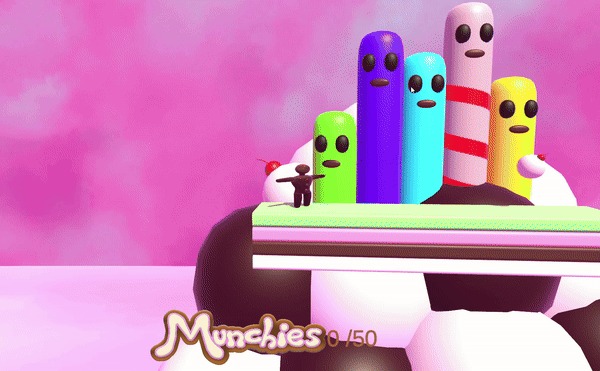
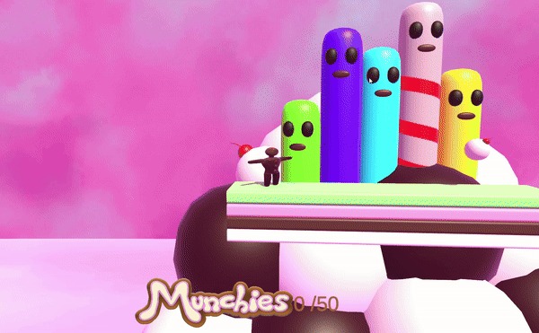

I'm proud to present the platformer game I created during a 2-day game jam with three team members. The game features a single level where you play as a gingerbread man. Your goal is to clear the level by collecting candy. If you collect two candies in a row, you unlock a "super jump," allowing you to leap higher than usual. This special jump must be saved for specific parts of the level to successfully complete it.
My very first Game-Jam
This was my very first game jam, and I was incredibly excited to participate! The event had a tight 2-day timeframe, which made things a bit stressful, but it was a lot of fun working together with my team of four to create a platformer. Unfortunately, I no longer have access to the code, as it was stored on an old Perforce server provided through the school. The server is restarted every year, and all projects are deleted. However, I’m still excited to showcase some footage of the game! I hope you look forward to it!
 
